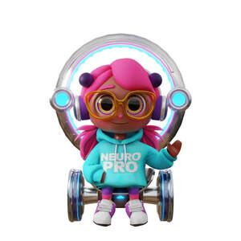

Trade Mark Journal No.2025/031 1 August 2025
UK00004236652 20 July 2025 (9,16,28)

- Class 9
- Ringtones [downloadable]; Downloadable ringtones; Downloadable video files; Downloadable image files; Downloadable music files; Downloadable software; Software downloadable from the internet; Digital music downloadable provided from MP3 internet websites; Downloadable videos; Downloadable application software; Digital music downloadable provided from MP3 internet web sites; Downloadable digital music provided from MP3 Internet web sites; Downloadable e-books; Digital music [downloadable] provided from mp3 web sites on the internet; Downloadable podcasts; Downloadable movies; Downloadable computer software; Computer software downloadable from the internet; Computer software downloaded from the internet; Downloadable video game software; Downloadable game software; Digital music downloadable from the Internet; Downloadable software applications; Downloadable video recordings; Downloadable digital music; Digital music downloadable provided from the internet; Downloadable applications; Downloadable videocasts; Computer games programmes downloaded via the internet [software]; Computer games programs downloaded via the internet [software]; Smartphone software applications, downloadable; Downloadable computer game software; Computer game software, downloadable; Digital music downloadable provided from a computer database or the internet; Digital books downloadable from the Internet; Downloadable digital photos; Computer software applications, downloadable; Downloadable computer software applications; Downloadable mobile coupons; Downloadable computer software for the transmission of information; Computer games programmes downloaded via the internet; Downloadable smart phone application software; Downloadable instant messaging software; Downloadable computer games; Downloadable computer utility software; Downloadable computer programs; Computer programs, downloadable; Programs (Computer -) [downloadable software]; Computer programs [downloadable software]; Downloadable video game programs; Computer screen saver software, recorded or downloadable; Downloadable printing fonts; Apparatus for downloading audio, video and data from the internet; Computer software platforms, recorded or downloadable; Downloadable game related software applications; Downloadable computer software for the management of information; Downloadable software in the nature of a mobile application; Downloadable computer graphics; Downloadable ringtones for mobile phones; Downloadable application software for smart phones; Downloadable mobile applications; Downloadable posters; Downloadable computer game programs; Downloadable wallpapers for computers and phones; Electronic sheet music, downloadable; Downloadable smart phone applications (software); Downloadable electronic games; Downloadable electronic game programs; Downloadable video recordings featuring music; Downloadable computer software for the transmission of data; Software for pay per click optimisation; Downloadable digital music files authenticated by non-fungible tokens [NFTs]; Downloadable digital assets; Downloadable software in the nature of a mobile application for playing games; Downloadable films; Weekly publications downloaded in electronic form from the internet; Downloadable postcards; Downloadable publications; Downloadable electronic brochures; Downloadable electronic books; Downloadable electronic game software for wireless devices; Downloadable electronic newsletters; Downloadable sound recordings; Computer software downloadable from global computer information networks; Computer application software for streaming audio-visual media content via the internet; Publications in electronic format [downloadable]; Downloadable electronic reports; Downloadable screen savers for computers; Downloadable graphics for mobile phones; Downloadable application software for virtual environments; Downloadable music sound recordings; Digital recording media; Digital media streaming devices; Covers for digital media players; Cases for digital media players; Computer software for the display of digital media; Media content; Digital signage; Digital music players; Digital video discs; Downloadable educational media; Handheld media players; Media players; Wearable digital electronic communication devices; Digital sensory devices; Portable media players; Prerecorded video cassettes featuring animated fictional stories; Optical character readers; Readers (Optical character -); Digital book readers; Electronic book reader covers; Film strip viewers; Electronic book readers; Read only memory [rom] cards; Cinematographic film, exposed; Film (Cinematographic -), exposed; Exposed cinematographic film; Wearable activity trackers; Podcasts; Videocasts; Audio tapes featuring music; Pre-recorded video tapes featuring music; Prerecorded audio tapes featuring music; Pre-recorded audio tapes featuring games; Pre-recorded audio cassettes featuring music; Audio recordings; Audio books; Prerecorded video tapes featuring music; Video recordings; Prerecorded music audio tapes; Audio tapes; Pre-recorded video tapes featuring games; Video tapes; Prerecorded non-musical audio tapes; Pre-recorded CDs featuring music; Musical video recordings; Pre-recorded audio cassettes; Recorded video tapes; Prerecorded music videos; Pre-recorded video cassette tapes; Video game cassettes; Video tapes with recorded animated cartoons; Tape recordings of music; Audio tape players; Audio cassettes; Cassettes [audio]; E-books; Pre-recorded audio tapes; Audio digital discs; Digital audio tapes; Audio digital tapes; Audio visual recordings; Audio players; Downloadable series of children’s books; Books recorded on disc; Video cassettes; Cassettes [video]; Video films; Pre-recorded video tapes; Video game software; Interactive video software; Video games software; Video game programs; Video game discs; Game programs for arcade video game machines; Games software for use with video game consoles; Game software; Interactive game software; Software for arcade video game machines; Programs for arcade video game machines; Computer game software for use with on-line interactive games; Game development software; Computer game discs; Interactive video game programs; Computer video game software; Video game computer programs; Video and computer game programs; Monitors for arcade video game machines; Computer game software; Headsets for playing video games; Computer game programs; Programs (Computer game -); Computer game cassettes; Computer game programmes; Computer games of chance; Computer games; Electronic game software; Interactive computer game programs; Games software; Electronic game programs; Downloadable interactive entertainment software for playing video games; Mobile apps; Mobile application software; Application software for mobile phones; Smartphone software; Application software for mobile devices; Computer application software for mobile phones; Downloadable software applications for mobile phones; Mobile software; Application software for smart phones; Software for mobile phones; Downloadable emoticons for mobile phones; Software and applications for mobile devices; Software applications for use with mobile devices; Software applications for mobile devices; Downloadable applications for mobile devices; Web application software; Computer game software for use on mobile devices; Electronic game software for mobile phones; Downloadable mobile applications for use with wearable computer devices; Software for online messaging; Mobile phone covers; Application software for wireless devices; Computer game software for use on mobile and cellular phones; Computer software for mobile phones; Application software for robot; Downloadable mobile applications for the management of data; Augmented reality software for use in mobile devices; Educational mobile applications; Software for smartphones; Plugin software; Mobile phone chargers; Business application software; Mobile phone cases; Computer application software; Displays for mobile phones; Interactive casino games provided through a computer or mobile platform; Application simulation software; Computer application software for use with wearable computer devices; Mobile phone screen protectors; Internet messaging software; Downloadable computer game software via a global computer network and wireless devices; Downloadable emoticons for mobile telephones; Interactive software; Application suites [software]; Computer application software featuring games and gaming; Education software; Animated cartoons in the form of cinematographic films; Animated films; Downloadable comic strips; Identity cards, magnetic; Magnetic identity cards; Animated cartoons; Cartoons (Animated -); Downloadable animated cartoons; Video disks with recorded animated cartoons; Animation software; 3D animation software; Prerecorded video cassettes featuring cartoons; Pre-recorded motion picture films; Prerecorded motion picture films; Interactive graphics screens; Pre-recorded films; Pre-recorded cinematographic films; Computer programmes for interactive television and for interactive games and/or quizzes; Motion picture films; Interactive multimedia game programs; Prerecorded motion picture videos; Interactive multimedia computer game programs; Pre-recorded DVDs featuring games; Interactive entertainment computer software for video games; Interactive multimedia computer game program; Interactive multimedia computer programs; Cinematographic films; Interactive multimedia software for playing games; Pre-recorded videos; Talking books; Downloadable instruction manuals in electronic form; Training manuals in the form of a computer program; Downloadable printable planners and organizers; Sensory software; Tactile screens [electronic].
- Class 16
- Digital printing paper; Story books; Books featuring fictional stories; Books featuring fantasy stories; Printed stories in illustrated form; Romance novels; Book ends; Series of fiction books; Novels; Fiction books; Series of non-fiction books; Song books; Graphic novels; Picture books; Series of computer game hint books; Book covers; Print characters; Writing books; Newspaper comic strips; Fantasy books; Comic strips' comic features; Wallpaper sample book; Writing sets; Comic books; School writing books; Writing paper; Sketch books; Non-fiction books; Writing or drawing books; Newspaper cartoons; Manuscript books; Printing characters; Photograph album pages; Comic strips [printed matter]; Recipe books; Computer game hint books; Cartoon strips [printed matter]; Information books; Activity books; Sticker activity books; Instruction sheets; Printed teaching activity guides; Informational sheets; Printed information sheets; Printed informational sheets; Score sheets; Paper sheets for note taking; Children's activity books; Music books; Children's books incorporating an audio component; Dictation books; Copy books; Books; Gift books; Printed music books; Guide books; Telephone books; Resource books; Guest books; Book binders; Video game strategy guidebooks; Computer game strategy guidebooks; Typographic characters; Dry transfer characters; Cartoon strips; Comic strips; Role playing game equipment in the nature of manuals; Comics; Caricatures; Sketches; Cartoon prints; Printed cartoon strips; Graphic drawings; Storybooks; Book jackets; Book marks; Book wrappings; Book markers; Paper book markers; Poster books; Autograph books; Covers for books; Appointment books; Printed books; Coloring books; Cookery books; Note books; Wirebound books; Flip books; Travel guide books; Birthday books; Painting books; Colouring books; Travel books; Address books; Drawing books; Sticker books; Blank journal books; Coupon books; Pop-up books; Date books; Scrap books; Agenda books; Cook books; Baby books; Baby books [storybooks]; Etching sheets; Colouring pencils; Pencils for colouring; Colouring crayons; Chalks for colouring; Colouring pens; Colouring pictures; Coloring pictures; Coloured pencils; Colour pens; Coloring books for adults; Coloured pens; Color pencils; Drawing pencils; Stamping inks; Pastel crayons; Decorations for pencils; Drawing stencils; Pencils; Workbooks containing exercises; Teaching manuals; Instructional and teaching material; Printed booklets; Information booklets; Instruction manuals; Instructional manuals for teaching purposes; Computer instruction manuals; Strategy guide books for card games; Instructional and teaching materials; Strategy guide books for computer games; Printed answer sheets; Printed teaching material; Computer game instruction manuals; Notebook covers; Instruction manuals relating to computer software; Printed teaching materials; Document files [stationery]; Study guides; File covers; Flipcharts; Document files; Handbooks [manuals]; Manuals [handbooks]; Figures made of paper.
- Class 28
- Games relating to fictional characters; Fantasy character toys; Toy human characters; Electronic activity toys; Video game apparatus; Video game consoles; Video game machines; Video game joysticks; Joysticks for video games; Game consoles; Game cards; Bingo game playing equipment; Games; Arcade video game machines; Arcade games; Game boards for trading card games; Arcade game machines; Computer game consoles; Pinball games; Video game apparatus, arcade games, and amusement machines ; Handheld game consoles; Hand-held game consoles; Computer game joysticks ; Gamepads for video game machines; Home video game machines; Controllers for game consoles; Chess games; Arcade video game machines with multi-terminals; Dice games; Coin-operated arcade video game machines; Joysticks for video game machines; Joysticks being parts of video game consoles; Balls for playing games; Controllers for video game machines; Stand-alone video game machines; Computer game apparatus; Video game machine cases; Marbles for playing games; Role play games; Hand-held consoles for playing video games; Amusement game machines; Quiz games; Skill and action games; Action skill games; Games consoles; Checkers [games]; Role playing games; Card games; Token-operated video game machines; Coin-operated pinball game machines; Machines for playing games of skill or chance; Board games; Game controllers for computers; Balls for games; Games (Balls for -); Marbles for games; Rubber character toys; Plastic character toys; Models for use with role playing games; Play sets for action figures; Doll costumes; Toy chemistry sets; Toy model theatres in the form of children's theatre sets; Play figures; Toy environments for use with action figures; Jokes (play things); Toy action figurines; Toy figures capable of transforming into various shapes; Playsets for action figures; Toy armor; Mascot dolls; Toy musical boxes [play articles]; Interactive gaming chairs for video games; Protective films adapted for screens for portable games; Plush toys; Plush dolls; Stuffed and plush toys; Stuffed plush toys; Plush stuffed toys; Soft sculpture plush toys; Smart plush toys; Plush toys with attached comfort blanket; Cuddly toys; Stuffed bean-filled toys; Soft toys; Fluffy toys; Stuffed toy bears; Soft sculpture toys; Stuffed toys; Stuffed toy animals; Stuffed dolls; Soft toys in the form of animals; Stuffed animals [toys]; Squeezable squeaking toys; Inflatable ride-on toys; Stuffed puppets; Inflatable thin rubber toys; Inflatable bath toys; Toy foam hands; Inflatable toys; Toy beanbags [Otedama]; Fabric toys; Bendable toys; Toy dolls; Modeled plastic toy figurines; Ride-on toys; Inflatable toys resembling air vehicles; Pet toys containing catnip; Toy figurines; Rocking toys; Toy furniture; Plastic toys for use in the bath; Toy tents; Bendy balls being toys; Cloth toys; Puppets; Finger puppets; Hand puppets; Masks (Toy -); Toy masks; Toy putty; Theatrical masks; Masks (Theatrical -); Toy musical instruments; Costume masks; Toy musical boxes; Costumes being childrens playthings; Animal replicas as playthings; Masks [playthings]; Masquerade masks; Toy hats; Toy xylophones; Toy robots; Toy and novelty face masks; Toy balloons; Bobble-head dolls; Musical toys; Radio-controlled toy robots; Toy fish; Face masks being playthings; Toy castles; Wind-up toys; Wooden toys; Wind-up walking toys; Toy gum machines; Toy music boxes; Toy balls; Bobblehead dolls; Ball-jointed dolls [BJD]; Action figure toys; Toy figure playsets; Scale model figures; Toy figures; Action figures; Toy action figures; Positionable toy figures; Cases for action figures; Clothing for toy figures; Collectable toy figures; Model craft kits of toy figures; Magnetic levitation toy figures; Electric action figures with lights and sounds; Action figures [toys or playthings]; Toy model train sets; Model train sets; Toy computers [not working]; Developmental toys; Electronic learning toys; Toy blocks for learning braille; Mechanical toys; Electric muscle stimulation bodysuits for sports; Toy food; Motor driven toy animals; Multiple activity toys for babies; Adhesive abdominal exercise belts, electric, for muscle stimulation; Mechanical action toys; Inflatable inner tubes for aquatic recreational use; Children's multiple activity toys; Electronic toys; Toys in the nature of imitation foodstuffs; Swing sets; Swings; Yoga swings; Baby swings; Swings [playthings]; Swings [playground equipment]; Balls for play; Electronic board games; Boards games; Chess boards.
Neuro Nook Limited